Designing a Self-Order Kiosk for Chido
Chido is a Mexican street food restaurant. I designed its full self-order flow for a portrait touchscreen, in Hebrew, from the welcome screen to the order number.
Problem
Ordering at a busy counter is slow, and a long menu with sauces and extras is easy to get wrong.
Solution
A short, photo-first flow: one choice per screen, food photos up front, and extras picked by tapping pictures.
Goal
Faster orders with fewer mistakes, and a bigger order on average.
Role UX/UI design · Tools Figma · Platform Kiosk, 1080 × 1920, Hebrew
User Research
Who stands in front of the kiosk, and what slows them down
KPIs
How the kiosk moves the experience: counter vs. kiosk
Ordered in under a minute
Ordered without help
Added an extra
Share of guests. “Kiosk” numbers are the targets I set for the design.
The whole order in 25 seconds
From walking up to the kiosk to the order number, in one short flow.
Information Architecture
Before any screen, I mapped the kiosk as a sitemap: welcome, dine in or take away, then six menu categories and one checkout.
- Simple items go straight to the dish
- Tacos and burritos split into ready made or build your own
- One checkout for every path
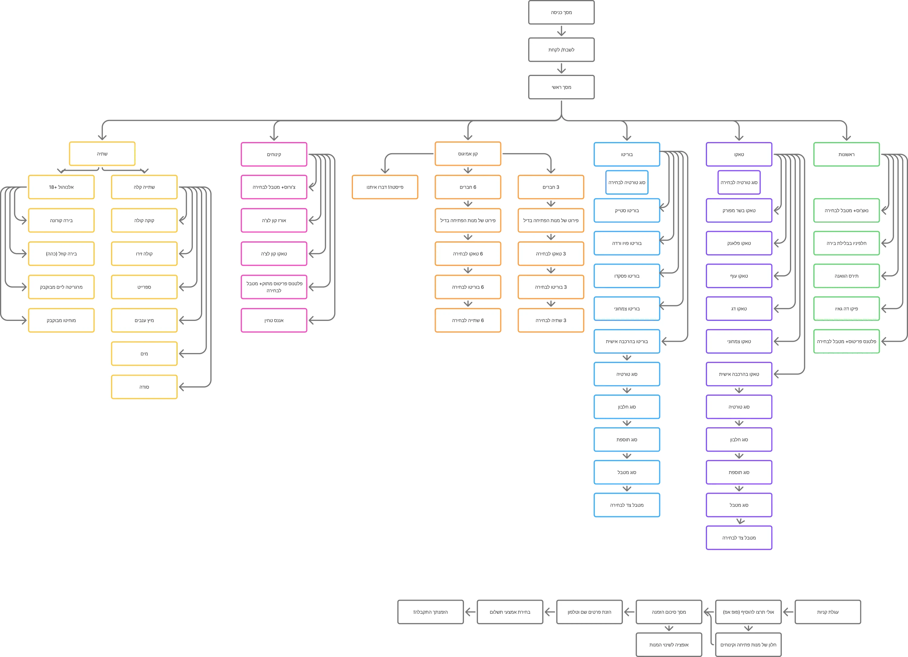
Process & Decisions
- One decision per screen, with big buttons
- Food photos lead, text comes second
- Sauces and extras picked from photo tiles, not lists
- The total and "Pay" always visible at the bottom
How I thought it through
What I saw
A long queue at the counter
Sauces and extras ordered wrong
Staff explaining the menu again and again
What users said
“What comes with this?”
“I just want to order fast”
“Can I change the sauce?”
Ideas
Pictures instead of option lists
A mascot that guides the way
Suggest add-ons before paying
What I chose
Dine in or take away on its own screen
Photo tiles for every choice
An order bar that never leaves
From welcome to dish
Cream paper, green buttons with a yellow outline, and the corn mascot where a guest might hesitate.
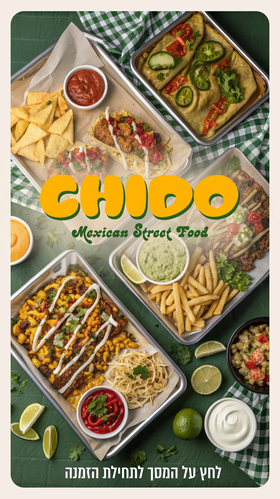
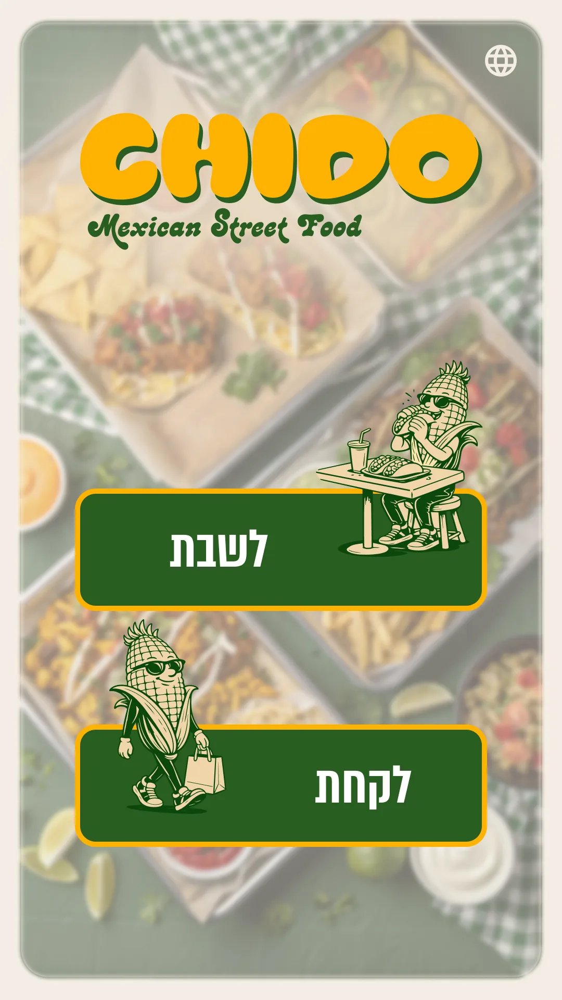
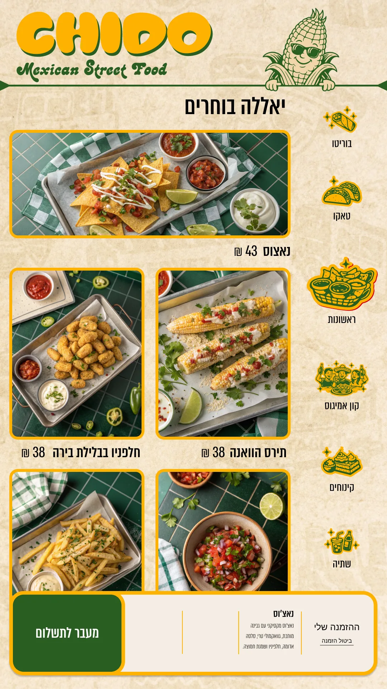
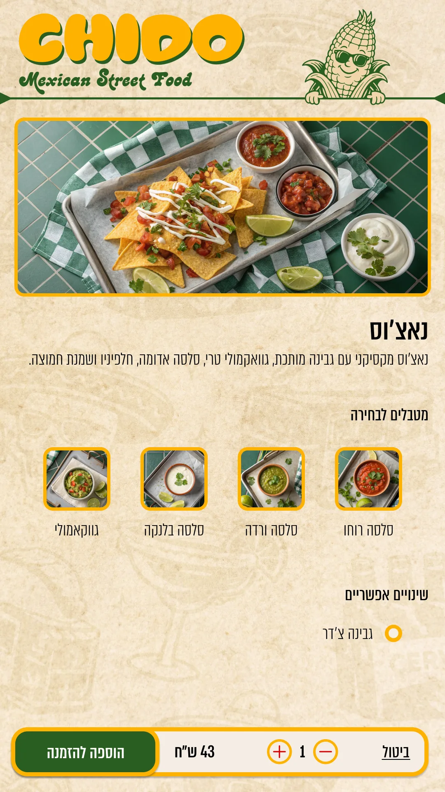
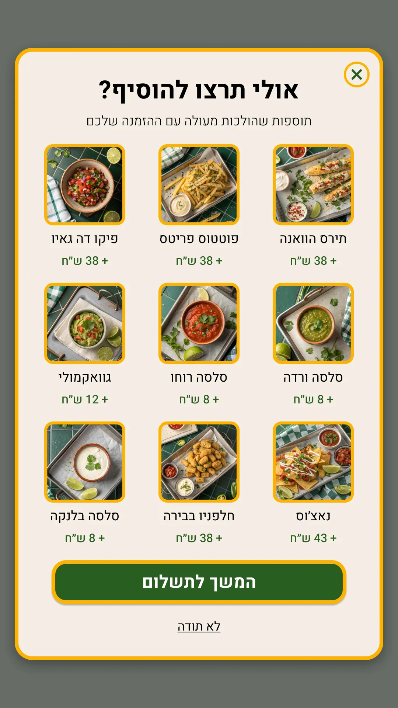
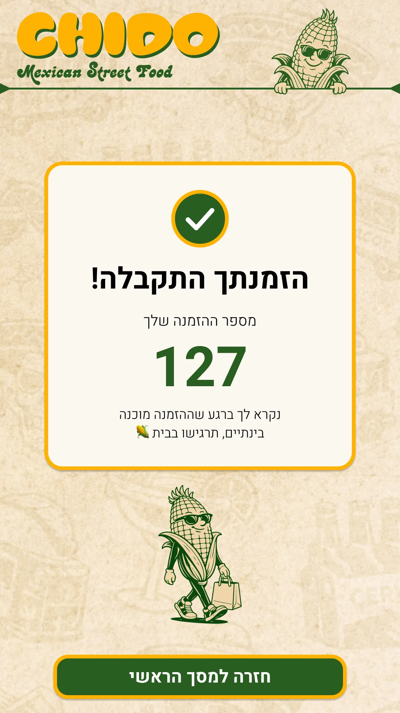
Brand & mascot
A retro, playful identity: a chunky yellow wordmark, a script tagline and a corn mascot in sunglasses.
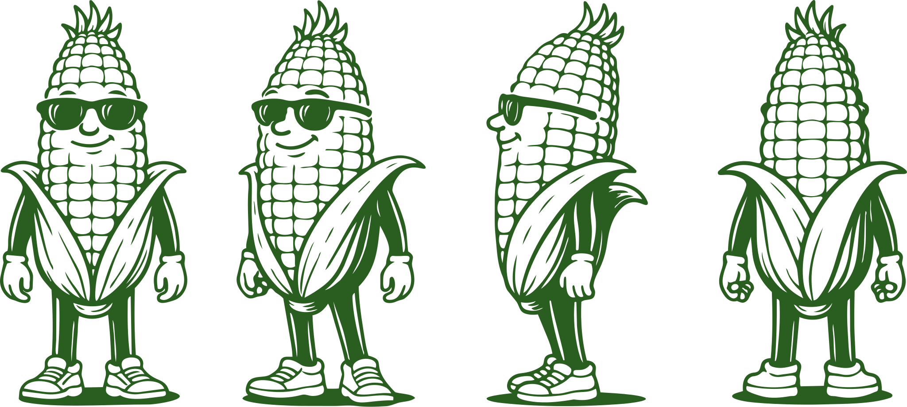
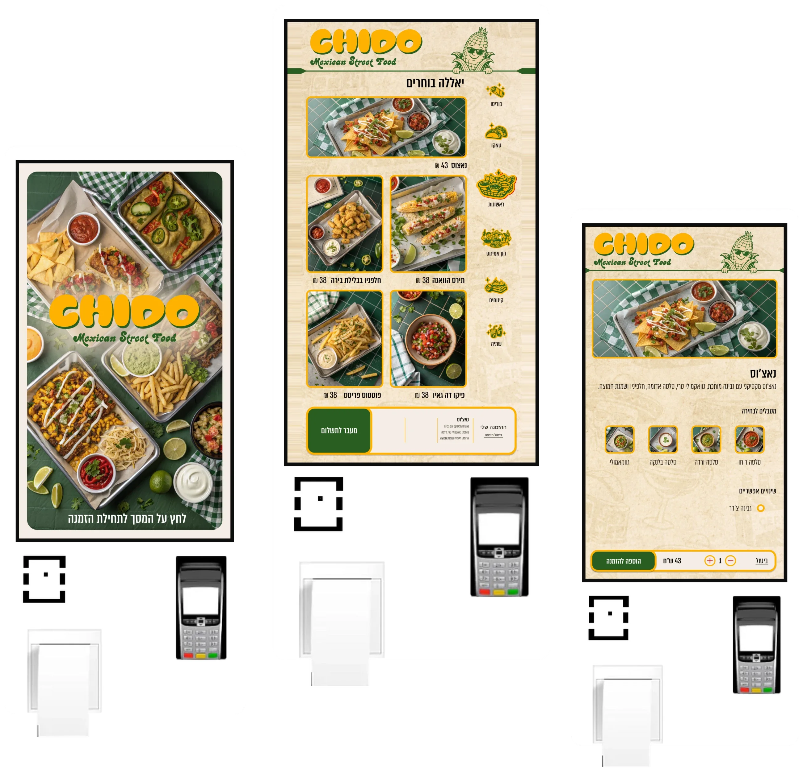
Early Wireframes
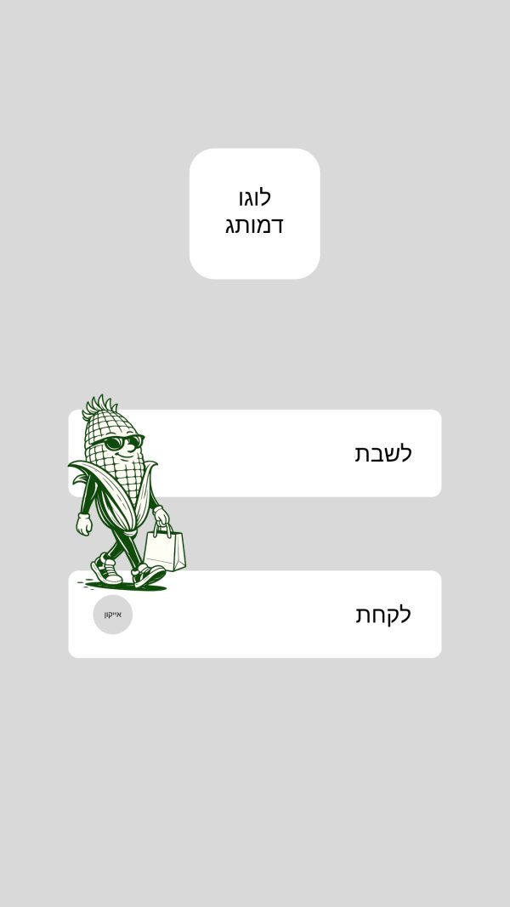
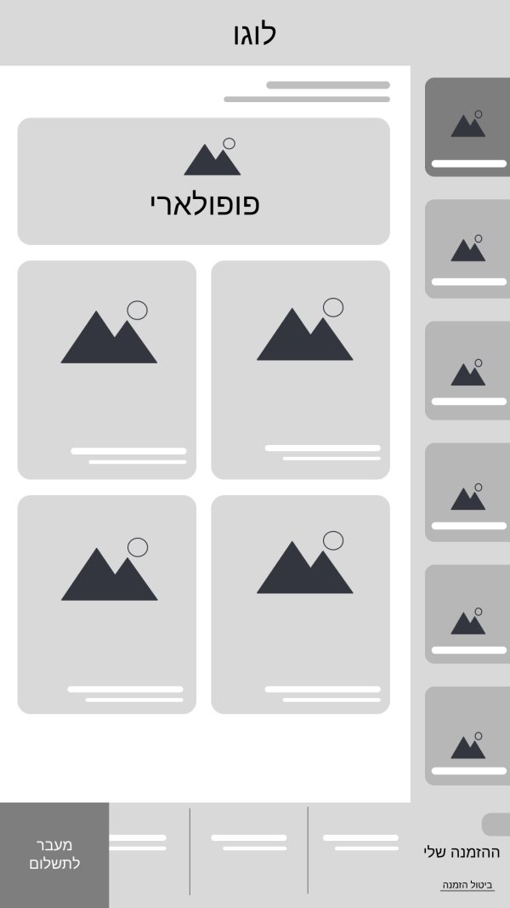
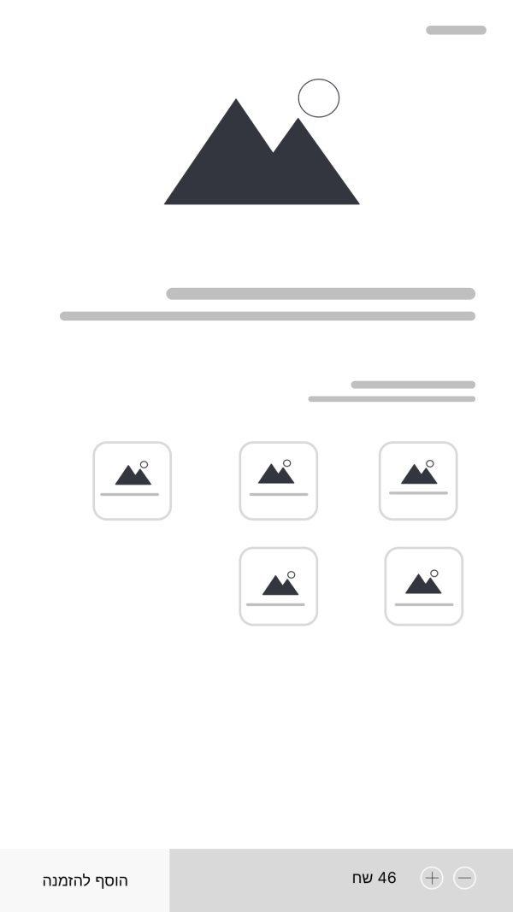
What I took away
A kiosk is a first impression. The brand and the photos set the tone of the meal.
Design for the queue. Big targets and one decision at a time keep it fast.
Wireframes first. Settling the structure in gray let the brand go on top without changes.